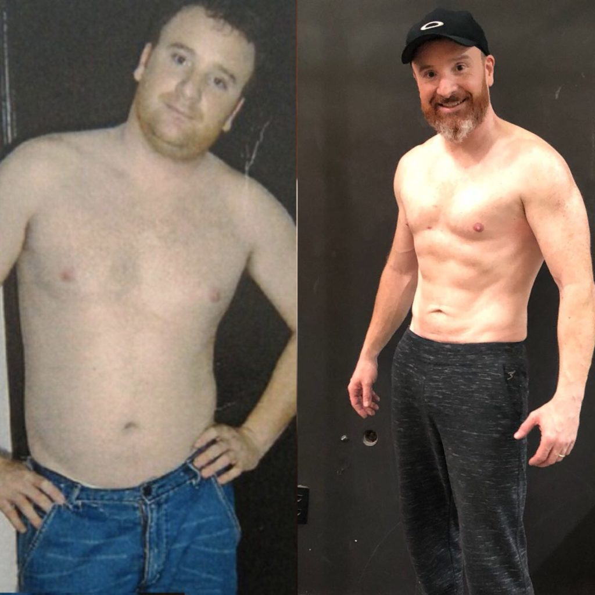

O que é o método STC?

Sistema de Transformação Corporal, é um método baseado em 5 pilares.
É muito simples: veja agora como está o seu corpo, e que você está prestes a entrar numa viagem de avião, dentro deste avião tem um grupo de pessoas que vão te orientar, motivar e ensinar exatamente o que você precisa fazer.
Assim que você descer desse avião você já é outra pessoa. Esse avião se chama STC, e eu vou embarcar nessa viagem junto com você!
No STC online você vai aprender e incorporar os hábitos para emagrecer e se manter magra para sempre. É isso mesmo que você leu, eu não quero só te ajudar a emagrecer, eu vou te ajudar a emagrecer e a manter esses resultado. E tem mais, você vai adorar essa transformação!
O verdadeiro motivo não está ligado a não comer ou fazer exercício físico todo dia, o que te impede de emagrecer é a falta de direcionamento, simples assim!
Estes são os 5 pilares para você ter o corpo dos seus sonhos:
-
1. Coach
Acompanhamento multidisciplinar com profissionais da nutrição
 -
2. Modelo de Alimentação
Nós vamos te passar o nosso modelo de dieta desenvolvido pelos médicos da universidade da Califórnia UCLA. Que é extremamente nutritiva e proteica, te deixando totalmente saciado(a), sem sentir fome e com bastante de energia.
-
3. Grupo de Suporte
Está comprovado que pessoas em grupo tem muito mais resultado do que individualmente.
-
4. Atividade Física
Chega de passar horas na academia, correndo quilômetros na esteira para emagrecer.
-
5. Suplementação
Por que todos os dias nosso corpo precisa de uma gama de nutrientes para funcionar bem, ter boa saúde, disposição e energia. E você saberá exatamente o que usar.
Você deve está se perguntando. Quem é a Marianna?

Meu nome é Marianna Meinberg, me especializei com alguns dos melhores Coachs, Nutrólogos, Nutricionistas do Brasil e nos Estados Unidos.
O que me fez chegar até aqui e ter o corpo que tenho, foi porque eu tinha muita vergonha dele e isso fazia com que eu não consequisse usar biquíni quando ia à praia.
Eu até conseguia me manter na dieta durante a semana, mas aos finais de semana, por causa de uma refeição, ganhava tudo o que tinha perdido. Depois que eu vi meu pai perder 27kgs em 3 meses fiquei animada e decidi testar o método STC.
Foi aí que perdi 10kgs e transformei o meu corpo! Nessa época eu estava na faculdade e as pessoas começaram a me perguntar o que eu estava fazendo e se eu poderia ajudá-las também.
Essa experiência mudou completamente minha vida, o jeito como eu me sentia. E ali eu entendi o que eu queria fazer a partir daquele momento.
Ajudar também as pessoas a transformarem seus corpos.
Depois de muito estudo eu criei os 5 pilares para ter o corpo que deseja. E não sou só eu que estou falando, já tenho vários alunos e alunas que consquitaram o corpo que tanto desejavam.
Veja o depoimentos de alguns alunos e alunas
-
Diana Santos
“Sou a Diana Santos, tenho 27 anos e moro em Aveiro, Portugal. Com o STC perdi 16kg, ganhei energia, auto-estima, saúde e sobretudo aprendi a comer! O STC transformou não só o meu corpo, mas a minha vida. Consegui sair de um grande estado depressivo e hoje sou uma nova pessoa!”
-
Assis Hill
“Meu nome é Assis Hill e antes de conhecer o STC, estava totalmente sem vaidade e com muita vergonha do próprio corpo, nunca imaginei que aos meus 39 anos conseguiria eliminar 23kg isso em apenas 3 meses e tudo graças ao STC. Agora com muito mais disposição, totalmente slim e muito feliz com o abdômen trincado."
-
Michele Martins
"Oi meu nome é Michele Martins, moro em Sorocaba, tenho 40 anos e 2 gestações e 4 filhos. Quando conheci o STC estava pesando 107KG e já havia tentado de tudo antes, fiz inúmeras dietas, sempre sem sucesso… Até consegui emagrecer duas vezes com muito sacrifícios e remédios mas rapidamente ganhei todo o peso de volta!! Achando que não havia mais solução, estava prestes a me submeter à cirurgia Bariátrica! A melhor coisa que eu fiz na vida foi antes, dar uma última chance e realizar o STC! Comendo muito bem, de uma forma prazeroso e feliz eu sequei 48Kg!!
-
Cintia Hillesheim
"Meu nome é Cíntia Hillesheim, 43 anos, sou mãe, casada. Antes do STC, tinha compulsão alimentar, não gostava de treinar e tinha vergonha do meu corpo. Com o STC eliminei 28kg e tenho uma ótima relação com os alimentos e estou muito feliz e disposta.”